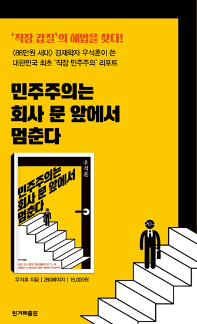

72
절이 싫으면 중이 떠나라는 조직 중에서 크게 잘된 조직을 본 적이 거의 없다. 젊고 유능한 사람들은 그 꼴 보기 싫어서 먼저 떠나고, 나중에는 땡중만 남는다.
90
시대는 변하고 사람들도 변한다. 제발 회사가 가족 같지 않았으면 좋겠다는 사람들과 회사를 가족으로 생각하는 사람들이 같이 일해야 하는 상황이다.
159
좋은 사회는 아버지가 자상하든 그렇지 않든, 부자든 아니든, 자식들의 삶이 일정 수준 이상은 유지할 수 있는 사회다. 롤스John Rawls가 얘기하는 정의론의 핵심이 바로 이 내용이다. 아버지가 누구냐에 따라 자식의 운명이 다르기는 하겠지만, 최악의 경우도 너무 황당하지 않은 것, 그게 정의로운 사회의 기준이다.
215
정리해보면, 아시아나는 독일 항공사인 루프트한자와 정반대의 길로 가고 있다. 안전, 성과, 정시성 등 항공사에서 중요하게 생각하는 기준이 존재한다. 그 기준에 따라 항공사는 정비와 훈련을 적절히 보장하되 신뢰와 함께 이윤을 올릴 수 있는 방법을 찾는다. 그렇지만 아시아나의 경우는 이윤을 높이느라 다른 것들을 조금씩 희생하고 있었다. 내부 여성 집단이 제공하는 서비스의 여성성을 지나치게 강조하는 것은 보너스다. 그럼 왜 아시아나만 다른 방식으로 움직이는가?
224
가지라는 임신 순번제 같은 인권 문제라고 보는 것 같다. 가끔 젠더 문제의 한 특수 형태로 태움을 거론하는 경우가 있기도 하다. 그렇지만 이건 인권이나 젠더 문제라기보다는 비용의 문제에 더 가깝다.
237
총독부 시절 학교에 만들어놓은 질서 체계로부터 우리는 과연 얼마나 멀리 와 있는가? 학교 민주주의라는 주제의 취지는 학교라는 공간 혹은 그 속에서 발생하는 사람들의 관계를 지금보다는 더 낫게 개선하는 데 있다. 학교에서 수준 높은 교육을 제공하고 더 나은 학습을 하는 것, 이런 문제들은 학교의 효율성에 관한 얘기다. 그러나 학교에서 불합리한 일을 덜 겪으면서 더 마음 편히 다닐 수 있게 하는 것, 이런 문제가 바로 학교 민주주의가 이야기하는 것이다.
238
과도하게 수직적인 관계에 의한 위계적 명령 체계 그리고 조정되기 어려운 부당함, 그 속에서 전형적인 조직의 실패가 벌어지고 있는지도 모른다.
239
1989년 문교부는 일선 학교에 ‘전교조 교사 식별법’이라는 공문을 보내면서 주의를 환기시킨 적이 있다. 그 내용을 잠시 보자.
1. 촌지를 받지 않는 교사
2. 학급문집이나 학급신문을 내는 교사
3. (특히 형편이 어려운) 학생들과 상담을 많이 하는 교사
4. 신문반, 민속반 등 학생들과 대화가 잘되는 특활반을 이끄는 교사
5. 지나치게 열심히 가르치려는 교사
6. 반 학생들에게 자율성, 창의성을 높이려 하는 교사
7. 탈춤, 민요, 노래, 연극을 가르치는 교사
8. 생활한복을 입고 풍물패를 조직하는 교사
9. 직원회의에서 원리원칙을 따지며 발언하는 교사
10. 아이들한테 인기 많은 교사
11. 자기 자리 청소 잘하는 교사
12. 학부모 상담을 자주 하는 교사
13. 사고 친 학생의 정학이나 퇴학 등 징계를 반대하는 교사
14. 한겨레신문이나 경향신문을 보는 교사
_〈신동아〉, 1989년 7월, 박순걸, 《학교 내부자들: 민주적인 학교를 위하여》(에듀니티, 2018) 재인용.
‘어처구니없다’는 표현은 딱 여기에 어울린다. 촌지 받지 않으면 빨갱이고, 직원회의에서 원리원칙을 따지면 불온세력이라고 하던 시기가 있었다. 심지어는 지나치게 열심히 학생을 가르치려는 것도 문제라고 했다. 그나마 이 시기는 87년 민주화 투쟁 이후에 사회적으로 좀 유화적인 분위기가 생겨난 다음이다. 이러니 21세기 이전에 우리의 학교 모습이 어땠는지, 그나마 촌지라도 없애는 데 전교조의 공이 얼마나 컸는지 미루어 짐작할 만하다.
286
존경하는 사람은 아무도 없는데, 잘난 척은 또 엄청나게 한다. 물론 한국의 모든 중소기업이 그런 것은 아니다. ‘그렇지 않은’ 기업의 맨 앞에 여행박사라는 회사가 있다.
321
‘좀 이상해도 괜찮아, 좀 달라도 괜찮아’, 이런 마음도 우리는 아직 먹기가 힘들다. 그러나 이제는 진짜로 ‘좀 이상해야 해, 좀 달라야 해’, 이렇게 서로 권할 수 있어야 한다. 새로운 획일성, 지독할 정도의 동일성을 어떻게 분산시킬 것인가? 이게 직장 민주주의라는 문제에 걸린 마지막 질문이다.
343
직장 민주주의, 목표를 크게 잡을 필요도 없다. 지상낙원 같은, 출근이 너무너무 즐거운 직장을 만들자, 그건 그냥 꿈같은 얘기다. 그런 말은 오키나와나 하와이 같은 휴양지에나 어울린다. ‘가족 같은’ 회사, 그것도 개소리다. 집안이 편안한 집안, 한국에 얼마나 되겠는가. 많은 사람들이 “이놈의 집구석”, 투덜투덜거리면서 집에 간다. 가족이 행복하다는 것, 그것도 이데올로기다.
344
“민주주의가 밥 먹여주냐?” 이런 질문을 오랫동안 받았다. 밥 먹여주는지는 여전히 잘 모르겠지만, “빌어먹을”이라는 소리가 입에서 턱턱 튀어나오는 상황 정도는 막아줄 수 있다. “더러워서 그만둬야겠다”는 지저분한 퇴사 이유 정도는 피하게 해줄 수 있다. 그야말로 최소한의 생활 민주주의 아니겠는가? 그 정도 조건을 만드는 것이 최순실을 쫓아내는 일보다 어려운 일은 아니지 않은가?